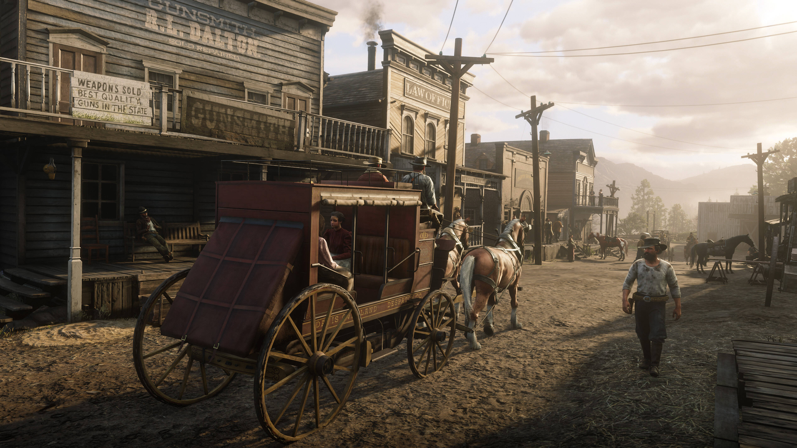
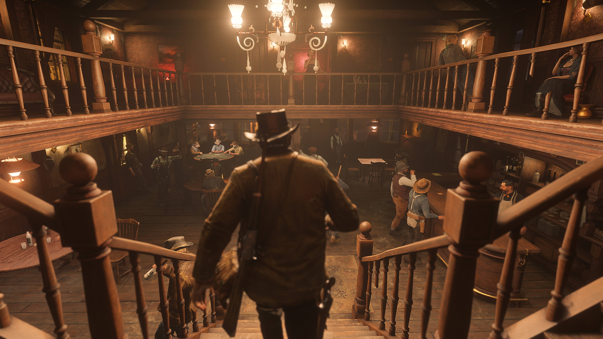

The world of Red Dead Redemption 2 is designed to feel alive and constantly evolving. From snowy mountain peaks to dusty deserts and swampy bayous, every region has its own atmosphere, wildlife, weather, and culture. The game captures both the beauty and harshness of the late 1800s American frontier, making exploration feel natural and rewarding.

Vast Open World
One of the most impressive aspects of the game is the sheer size and detail of its map. Players can travel across forests, rivers, plains, mountain ranges, and abandoned settlements without ever encountering a loading screen. Hidden cabins, treasure maps, stranger encounters, and random events are scattered throughout the landscape, encouraging players to wander off the main path. Whether riding horseback through a thunderstorm or discovering forgotten ruins deep in the wilderness, the world constantly rewards curiosity.

Cities and Towns
The towns and cities across the map each have their own personality and culture. Saint Denis stands as a bustling industrial city inspired by New Orleans, filled with factories, trolley cars, and wealthy citizens. Smaller towns like Valentine and Rhodes capture the rough atmosphere of frontier life with saloons, sheriffs, and local rivalries. Every location feels believable due to the detailed NPC interactions, unique architecture, and dynamic daily routines that make the settlements feel inhabited rather than scripted.

Activities Across the World
Beyond the main story, the world is packed with activities that give players freedom in how they experience the game. Players can gamble in saloons, rob trains, hunt legendary animals, complete bounty missions, play poker, collect rare items, or simply camp under the stars. Random encounters with strangers and dynamic world events ensure that no two journeys across the map feel exactly the same. These activities help create a world that feels immersive long after the story is complete.